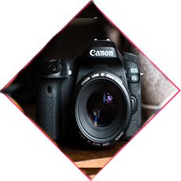

Publicación única del blog
PREPARACIÓN PARA UNA FOTOGRAFÍA
Le ofresemos la mejor calidad porqe en una fotografía hay mucho en juego es la razon de que la fotografía no se trata de lo fotografiado. Se trata de cómo se ve esa fotografiada. La magia de la fotografía es metafísica. Lo que ves en ella no es lo que viste en ese momento, sino lo qe veras luego cuando ese momento aya pasado.
Se necesita mucha imaginación para ser un buen fotógrafo. Se necesita menos imaginación para ser pintor porque se puede inventar cosas, pero en fotografía ... Se necesita mucho mirar antes de aprender a ver lo extraordinario.
Por supuesto, siempre habrá aquellos que solo miran la técnica, que preguntan ‘cómo’, mientras que otros, de naturaleza más curiosa, preguntan ‘por qué’. Personalmente siempre he preferido la inspiración a la información. La fotografía es un medio en el que si no disparas a menudo no lo haces del todo, porque las cosas no ocurren dos veces. Una roca probablemente siempre será más o menos exactamente como la viste ayer. Pero otras cosas cambian, no siempre están ahí el día después o la semana posterior. AGA DE SU MOMENTO UN RECUERDO INOLVIDABLE.